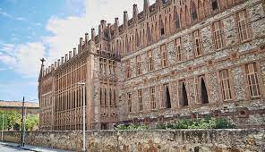

Gaudi

Le Collège Sainte-Thérèse à Barcelone, conçu entre 1887 et 1889 par l'architecte Joan Baptista Pons i Trabal et ensuite dirigé par Antoni Gaudí, est un exemple remarquable du modernisme catalan. La structure rectangulaire, initialement destinée à un collège religieux, présente une apparence de forteresse avec des éléments décoratifs en brique et des grilles en fer forgé. Gaudí a incorporé des symboles religieux tels que des cœurs et des colombes dans la conception. L'intérieur révèle des arcs caténaires paraboliques, une caractéristique de Gaudí, et une attention particulière à la lumière naturelle. La chapelle néogothique, construite en 1908, complète cette œuvre marquante de l'architecture catalane.
